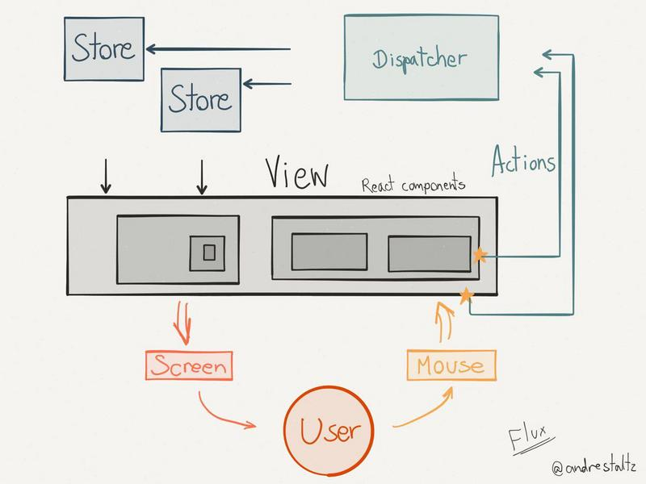

Redux快速上手 #
重要提示： 本教程配套示例代码请前往redux-complete-sample下载，课程中会有大量的示例操作，操作说明均基于这个配套的示例代码仓库，所以为了方便学习，请务必下载安装并启动。
在开始往下阅读之前，我默认你已经学习了前面的课程，并且掌握了Webpack、ES6、React等知识的应用。
在前面的课程，我们已经使用React创建了一个应用，但是在实际项目中，面对复杂业务逻辑的挑战，如何清晰高效的管理应用内的数据流动成为了关键。
Flux思想已经在提出后得到逐步推广，并广泛应用到实际的项目中。facebook的flux实现，开源社区的reflux、redux等类库开始涌现并得到了广大开发者的认同和使用。
Redux以其简单易用、文档齐全易懂等优点在开源社区得到开发者的一致好评，所以接下来让我们一起走进Redux，学习并将其使用到我们实际的项目开发中。
1. 基本介绍 #
React 已经帮我们在视图层解决了禁止异步和直接操作 DOM 等问题，让页面的高效渲染和组件化开发成为了可能。美中不足的是，React 依旧把处理 state 中数据的问题留给了你，那么，Redux的出现就是为了帮你解决这个问题。
1.1 Flux & Redux #
最初，Facebook官方提出了FLUX思想管理数据流，同时也给出了自己的实现方案flux来管理React应用。

看图说话：
1.在view中触发action中的方法后
2.action发送dispatch
3.store接收新的数据进行合并，然后触发View中绑定在store上的方法
4.最后通过修改局部state来改变view的展示

看图说话：
1.view直接触发dispatch
2.dispatch将action发送到reducer中后，根节点上会更新props，改变全局view。
3.redux将view和store的绑定从手动编码中提取出来，放在了统一规范放在了自己的体系中。
相对于Flux而言，Redux的实现更简单，思路更清晰，写的代码也相对更少；只维护单一的 store；在github上收货了16000+的star，广受欢迎...
1.2 对 Redux 的介绍 #
- Redux 是 State 容器，提供可预测化的状态管理
- 它可以让你构建一致化的应用，运行于不同的环境（客户端、服务器、原生应用），并且易于测试
- 还提供 redux-devtools 让开发者享受超爽的开发体验
- 体小精悍（只有2kB）且没有任何依赖
- 拥有丰富的生态圈：教程、开发者工具、路由、组件、中间件、工具集...
2. 快速上手 #
$ git clone git@github.com:GuoYongfeng/redux-complete-sample.git
$ cd redux-complete-sample && npm install
$ cd demo-redux-start
$ webpack-dev-server --progress --colors
示例代码快速体验
import { createStore } from 'redux';
// 这是一个 reducer，形式为 (state, action) => state 的纯函数。描述了 action 如何把 state 转变成下一个 state。
// state 的形式取决于你，可以是基本类型、数组、对象、
// 甚至是 Immutable.js 生成的数据结构。惟一的要点是
// 当 state 变化时需要返回全新的对象，而不是修改传入的参数。
function counter(state = 0, action) {
switch (action.type) {
case 'INCREMENT':
return state + 1;
case 'DECREMENT':
return state - 1;
default:
return state;
}
}
// 创建 Redux store 来存放应用的状态。
// API 是 { subscribe, dispatch, getState }。
let store = createStore(counter);
// 一个单纯渲染页面内容的函数
const PureRender = () => {
document.body.innerText = store.getState();
}
// 可以手动订阅更新，也可以事件绑定到视图层。
store.subscribe(PureRender);
// 执行渲染函数
PureRender();
// 改变内部 state 惟一方法是 dispatch 一个 action。
// action 可以被序列化，用日记记录和储存下来，后期还可以以回放的方式执行
document.addEventListener('click', function( e ){
// store dispatch 调度分发一个 action（fire）
store.dispatch({ type: 'DECREMENT'});
})
3. 理解 Redux 的核心概念 #
3.1 Action & Action Creator #
在 Redux 中，改变 State 只能通过 action，它是 store 数据的唯一来源。一般来说你会通过 store.dispatch() 将 action 传到 store。。并且，每一个 action 都必须是 Javascript 的简单对象，例如：
{
type: 'ADD_TODO',
text: 'Learn Redux'
}
Redux 要求 action 是可以被序列化的，使这得应用程序的状态保存、回放、Undo 之类的功能可以被实现。因此，action 中不能包含诸如函数调用这样的不可序列化字段。
action 的格式是有建议规范的，可以包含以下字段：
{
type: 'ADD_TODO',
payload: {
text: 'Do something.'
},
`meta: {}`
}
如果 action 用来表示出错的情况，则可能为：
{
type: 'ADD_TODO',
payload: new Error(),
error: true
}
type 是必须要有的属性，其他都是可选的。完整建议请参考 Flux Standard Action(FSA) 定义。已经有不少第三方模块是基于 FSA 的约定来开发了。
Action Creator
事实上，创建 action 对象很少用这种每次直接声明对象的方式，更多地是通过一个创建函数。这个函数被称为Action Creator，例如：
function addTodo(text) {
return {
type: ADD_TODO,
text
};
}
Action Creator 看起来很简单，但是如果结合上 Middleware 就可以变得非常灵活，后面会专门讲 Middleware 。
3.2 Reducer #
我们先来看一下 Javascript 中 Array.prototype.reduce 的用法：
const initState = '';
const actions = ['a', 'b', 'c'];
// 传入当前的 state 和 action ，返回新的 state
const newState = actions.reduce((curState, action) => curState + action);
console.log( newState );
对应的理解，Redux 中的 reducer 是一个纯函数，传入state和action，返回一个新的state tree，简单而纯粹的完成某一件具体的事情，没有依赖，简单而纯粹是它的标签。
const counter = (state = 0, action) => {
switch (action.type) {
case 'INCREMENT':
return state + 1;
case 'DECREMENT':
return state - 1;
default:
return state;
}
}
3.3 Store #
Store 就是用来维持应用所有的 state 树 的一个对象。 改变 store 内 state 的惟一途径是对它 dispatch 一个 action。
Store 是一个具有以下四个方法的对象：
getState()dispatch(action)subscribe(listener)replaceReducer(nextReducer)
3.3.1 getState() #
返回应用当前的 state 树。 它与 store 的最后一个 reducer 返回值相同。
返回值：应用当前的 state 树。
3.3.2 dispatch(action) #
dispatch 分发 action。这是触发 state 变化的惟一途径。
会使用当前 getState() 的结果和传入的 action 以同步方式的调用 store 的 reduce 函数。返回值会被作为下一个 state。从现在开始，这就成为了 getState() 的返回值，同时变化监听器(change listener)会被触发。
在 Redux 里，只会在根 reducer 返回新 state 结束后再会调用事件监听器，因此，你可以在事件监听器里再做 dispatch。惟一使你不能在 reducer 中途 dispatch 的原因是要确保 reducer 没有副作用。如果 action 处理会产生副作用，正确的做法是使用异步 action 创建函数。
示例：
import { createStore } from 'redux'
// reducer
const todos = (state = [''], action) => {
switch (action.type) {
case 'ADD_TODO':
console.log(Object.assign([], state, [action.text]))
return Object.assign([], state, [action.text]);
default:
return state;
}
}
let store = createStore(todos, [ 'Use Redux' ])
// action creator
function addTodo(text) {
return {
type: 'ADD_TODO',
text
}
}
// dispatch
store.dispatch(addTodo('Read the docs'))
store.dispatch(addTodo('Read about the middleware'))
3.3.3 subscribe(listener) #
添加一个变化监听器。每当 dispatch action 的时候就会执行，state 树中的一部分可能已经变化。这是一个底层 API。多数情况下，你不会直接使用它，会使用一些 React（或其它库）的绑定。
示例
import { createStore } from 'redux'
// reducer
const todos = (state = [''], action) => {
switch (action.type) {
case 'ADD_TODO':
return Object.assign([], state, [action.text]);
default:
return state;
}
}
let store = createStore(todos, [ 'Use Redux' ])
// action creator
function addTodo(text) {
return {
type: 'ADD_TODO',
text
}
}
const handleChange = () => {
console.log(store.getState());
}
let unsubscribe = store.subscribe(handleChange)
handleChange()
// dispatch
store.dispatch(addTodo('Read the docs'))
store.dispatch(addTodo('Read about the middleware'))
4. Redux 的顶层 API 介绍 #
4.1 createStore #
调用方式：createStore(reducer, [initialState])
创建一个 Redux store 来以存放应用中所有的 state，应用中应有且仅有一个 store。 这个API返回一个store，这个store中保存了应用所有 state 的对象。改变 state 的惟一方法是 dispatch action。你也可以 subscribe 监听 state 的变化，然后更新 UI。我们来看一个示例
我们可以试着模拟 createStore，深入了解其原理
// reducer 纯函数，具体的action执行逻辑
const counter = (state = 0, action) => {
switch (action.type) {
case 'INCREMENT':
return state + 1;
case 'DECREMENT':
return state - 1;
default:
return state;
}
}
// 模拟create store，了解其原理
const createStore = (reducer) => {
let state;
let listeners = [];
const getState = () => state;
const dispatch = (action) => {
state = reducer(state, action);
listeners.forEach(listener => listener());
}
const subscribe = (listener) => {
listeners.push(listener);
return () => {
listeners = listeners.filter(item => item !== listener);
}
}
dispatch({});
return { getState, dispatch, subscribe };
}
const store = createStore(counter);
// view 对应到React里面的component
const PureRender = () => {
document.body.innerText = store.getState();
}
// store subscribe 订阅或是监听view（on）
store.subscribe(PureRender);
PureRender();
document.addEventListener('click', function( e ){
// store dispatch 调度分发一个 action（fire）
store.dispatch({ type: 'DECREMENT'});
})
4.2 combineReducers #
调用方式：combineReducers(reducers)
随着应用变得复杂，需要对 reducer 函数进行拆分，拆分后的每一块独立负责管理 state 的一部分。把一个由多个不同 reducer 函数作为 value 的 object，合并成一个最终的 reducer 函数，然后就可以对这个 reducer 调用 createStore。
示例如下
代码清单：reducer/todos.js
export default function todos(state = [], action) {
switch (action.type) {
case 'ADD_TODO':
return state.concat([action.text])
default:
return state
}
}
代码清单：reducer/counter.js
export default function counter(state = 0, action) {
switch (action.type) {
case 'INCREMENT':
return state + 1
case 'DECREMENT':
return state - 1
default:
return state
}
}
代码清单：reducers/index.js
import { combineReducers } from 'redux'
import todos from './todos'
import counter from './counter'
export default combineReducers({
todos,
counter
})
代码清单：App.js
import { createStore } from 'redux'
import reducer from './reducer/index.js'
let store = createStore(reducer)
console.log('当前的 state :', store.getState())
store.dispatch({
type: 'ADD_TODO',
text: 'Use Redux'
})
store.dispatch({
type: 'INCREMENT',
})
console.log('改变后的 state :', store.getState())
4.3 applyMiddleware #
调用方式：applyMiddleware(...middlewares)
使用包含自定义功能的 middleware 来扩展 Redux 是一种推荐的方式。Middleware 可以让你包装 store 的 dispatch 方法来达到你想要的目的。同时， middleware 还拥有“可组合”这一关键特性。多个 middleware 可以被组合到一起使用，形成 middleware 链。其中，每个 middleware 都不需要关心链中它前后的 middleware 的任何信息。
具体用法我们高级部分详细说明。
4.4 bindActionCreators #
调用方式：bindActionCreators(actionCreators, dispatch)
惟一使用 bindActionCreators 的场景是当你需要把 action creator 往下传到一个组件上，却不想让这个组件觉察到 Redux 的存在，而且不希望把 Redux store 或 dispatch 传给它。
具体用法我们高级部分详细说明。
4.5 compose #
调用方式：compose(...functions)
compose 用来实现从右到左来组合传入的多个函数，它做的只是让你不使用深度右括号的情况下来写深度嵌套的函数，仅此而已。
5. 使用 React-redux 连接 react 和 redux #
5.1 没有react-redux的写法 #
封装一个组件，将组件和Redux做基本的组合
import { createStore } from 'redux';
import React, { Component } from 'react';
import ReactDOM from 'react-dom';
// reducer 纯函数，具体的action执行逻辑
const counter = (state = 0, action) => {
switch (action.type) {
case 'INCREMENT':
return state + 1;
case 'DECREMENT':
return state - 1;
default:
return state;
}
}
const store = createStore(counter);
// Counter 组件
class Counter extends Component {
render(){
return (
<div>
<h1>{this.props.value}</h1>
<button onClick={this.props.onIncrement}>点击加1</button>
<button onClick={this.props.onDecrement}>点击减1</button>
</div>
)
}
}
const PureRender = () => {
ReactDOM.render(
<Counter
value={store.getState()}
onIncrement={ () => store.dispatch({type: "INCREMENT"}) }
onDecrement={ () => store.dispatch({type: "DECREMENT"}) }
/>, document.getElementById('app')
);
}
// store subscribe 订阅或是监听view（on）
store.subscribe(PureRender)
PureRender()
5.2 React-redux 提供的 connect 和 Provider #
<Provider store> 使组件层级中的 connect() 方法都能够获得 Redux store。正常情况下，你的根组件应该嵌套在 `<Provider> 中才能使用 connect() 方法。
ReactDOM.render(
{/* 使组件层级中的 connect() 方法都能够获得 Redux store */}
<Provider store={store}>
{/* 这里传入的组件MyRootComponent是组件层级的根组件 */}
<MyRootComponent />
</Provider>,
rootEl
);
connect([mapStateToProps], [mapDispatchToProps], [mergeProps], [options])
connect方法是用来连接 React 组件与 Redux store，连接操作不会改变原来的组件类，反而返回一个新的已与 Redux store 连接的组件类。
使用react-redux的一个简单完整示例
import React, { Component, PropTypes } from 'react'
import ReactDOM from 'react-dom'
import { createStore } from 'redux'
import { Provider, connect } from 'react-redux'
// 这是一个展示型组件 Counter
class Counter extends Component {
render() {
const { value, onIncreaseClick } = this.props
return (
<div>
<span>{value}</span>
<button onClick={onIncreaseClick}>戳我加1</button>
</div>
)
}
}
Counter.propTypes = {
value: PropTypes.number.isRequired,
onIncreaseClick: PropTypes.func.isRequired
}
// Action
const increaseAction = { type: 'increase' }
// Reducer
function counter(state = { count: 0 }, action) {
let count = state.count
switch (action.type) {
case 'increase':
return { count: count + 1 }
default:
return state
}
}
// Store
let store = createStore(counter)
// Map Redux state to component props
function mapStateToProps(state) {
// 这里拿到的state就是store里面给的state
console.log(state);
return {
value: state.count
}
}
// Map Redux actions to component props
function mapDispatchToProps(dispatch) {
// dispatch(action) { }
return {
onIncreaseClick: () => dispatch(increaseAction)
}
}
class App extends Component {
render() {
// store里的state经过connect连接后给了根组件的props
console.log(this.props);
return (
<div>
<h1>学习使用react-redux</h1>
<Counter {...this.props} />
</div>
)
}
}
// Connected Component
let RootApp = connect(
mapStateToProps,
mapDispatchToProps
)(App)
ReactDOM.render(
<Provider store={store}>
<RootApp />
</Provider>,
document.getElementById('app')
)
实际应用中，connect这个部分会比较复杂，我们后续高级部分内容进行补充。
6. 一步步开发一个 TODO 应用 #
6.1 入口文件 #
index.js
import React from 'react'
import { render } from 'react-dom'
import { createStore } from 'redux'
import { Provider } from 'react-redux'
import App from './containers/App'
import todoApp from './reducers'
let store = createStore(todoApp)
let rootElement = document.getElementById('app')
render(
<Provider store={store}>
<App />
</Provider>,
rootElement
)
6.2 Action 创建函数和常量 #
actions.js
/*
* action 类型
*/
export const ADD_TODO = 'ADD_TODO';
export const COMPLETE_TODO = 'COMPLETE_TODO';
export const SET_VISIBILITY_FILTER = 'SET_VISIBILITY_FILTER'
/*
* 其它的常量
*/
export const VisibilityFilters = {
SHOW_ALL: 'SHOW_ALL',
SHOW_COMPLETED: 'SHOW_COMPLETED',
SHOW_ACTIVE: 'SHOW_ACTIVE'
};
/*
* action 创建函数
*/
export function addTodo(text) {
return { type: ADD_TODO, text }
}
export function completeTodo(index) {
return { type: COMPLETE_TODO, index }
}
export function setVisibilityFilter(filter) {
return { type: SET_VISIBILITY_FILTER, filter }
}
6.3 Reducers #
reducers.js
import { combineReducers } from 'redux'
import { ADD_TODO, COMPLETE_TODO, SET_VISIBILITY_FILTER, VisibilityFilters } from './actions'
const { SHOW_ALL } = VisibilityFilters
function visibilityFilter(state = SHOW_ALL, action) {
switch (action.type) {
case SET_VISIBILITY_FILTER:
return action.filter
default:
return state
}
}
function todos(state = [], action) {
switch (action.type) {
case ADD_TODO:
return [
...state,
{
text: action.text,
completed: false
}
]
case COMPLETE_TODO:
return [
...state.slice(0, action.index),
Object.assign({}, state[action.index], {
completed: true
}),
...state.slice(action.index + 1)
]
default:
return state
}
}
const todoApp = combineReducers({
visibilityFilter,
todos
})
export default todoApp
6.4 容器组件 #
containers/App.js
import React, { Component, PropTypes } from 'react'
import { connect } from 'react-redux'
import { addTodo, completeTodo, setVisibilityFilter, VisibilityFilters } from '../actions'
import AddTodo from '../components/AddTodo'
import TodoList from '../components/TodoList'
import Footer from '../components/Footer'
class App extends Component {
render() {
// Injected by connect() call:
const { dispatch, visibleTodos, visibilityFilter } = this.props
return (
<div>
<AddTodo
onAddClick={text =>
dispatch(addTodo(text))
} />
<TodoList
todos={visibleTodos}
onTodoClick={index =>
dispatch(completeTodo(index))
} />
<Footer
filter={visibilityFilter}
onFilterChange={nextFilter =>
dispatch(setVisibilityFilter(nextFilter))
} />
</div>
)
}
}
App.propTypes = {
visibleTodos: PropTypes.arrayOf(PropTypes.shape({
text: PropTypes.string.isRequired,
completed: PropTypes.bool.isRequired
}).isRequired).isRequired,
visibilityFilter: PropTypes.oneOf([
'SHOW_ALL',
'SHOW_COMPLETED',
'SHOW_ACTIVE'
]).isRequired
}
function selectTodos(todos, filter) {
switch (filter) {
case VisibilityFilters.SHOW_ALL:
return todos
case VisibilityFilters.SHOW_COMPLETED:
return todos.filter(todo => todo.completed)
case VisibilityFilters.SHOW_ACTIVE:
return todos.filter(todo => !todo.completed)
}
}
// Which props do we want to inject, given the global state?
// Note: use https://github.com/faassen/reselect for better performance.
function select(state) {
return {
visibleTodos: selectTodos(state.todos, state.visibilityFilter),
visibilityFilter: state.visibilityFilter
}
}
// 包装 component ，注入 dispatch 和 state 到其默认的 connect(select)(App) 中；
export default connect(select)(App)
6.5 展示组件 #
components/AddTodo.js
import React, { Component, PropTypes } from 'react'
export default class AddTodo extends Component {
render() {
return (
<div>
<input type='text' ref='input' />
<button onClick={(e) => this.handleClick(e)}>
Add
</button>
</div>
)
}
handleClick(e) {
const node = this.refs.input
const text = node.value.trim()
this.props.onAddClick(text)
node.value = ''
}
}
AddTodo.propTypes = {
onAddClick: PropTypes.func.isRequired
}
components/Footer.js
import React, { Component, PropTypes } from 'react'
export default class Footer extends Component {
renderFilter(filter, name) {
if (filter === this.props.filter) {
return name
}
return (
<a href='#' onClick={e => {
e.preventDefault()
this.props.onFilterChange(filter)
}}>
{name}
</a>
)
}
render() {
return (
<p>
Show:
{' '}
{this.renderFilter('SHOW_ALL', 'All')}
{', '}
{this.renderFilter('SHOW_COMPLETED', 'Completed')}
{', '}
{this.renderFilter('SHOW_ACTIVE', 'Active')}
.
</p>
)
}
}
Footer.propTypes = {
onFilterChange: PropTypes.func.isRequired,
filter: PropTypes.oneOf([
'SHOW_ALL',
'SHOW_COMPLETED',
'SHOW_ACTIVE'
]).isRequired
}
components/Todo.js
import React, { Component, PropTypes } from 'react'
export default class Todo extends Component {
render() {
return (
<li
onClick={this.props.onClick}
style={{
textDecoration: this.props.completed ? 'line-through' : 'none',
cursor: this.props.completed ? 'default' : 'pointer'
}}>
{this.props.text}
</li>
)
}
}
Todo.propTypes = {
onClick: PropTypes.func.isRequired,
text: PropTypes.string.isRequired,
completed: PropTypes.bool.isRequired
}
components/TodoList.js
import React, { Component, PropTypes } from 'react'
import Todo from './Todo'
export default class TodoList extends Component {
render() {
return (
<ul>
{this.props.todos.map((todo, index) =>
<Todo {...todo}
key={index}
onClick={() => this.props.onTodoClick(index)} />
)}
</ul>
)
}
}
TodoList.propTypes = {
onTodoClick: PropTypes.func.isRequired,
todos: PropTypes.arrayOf(PropTypes.shape({
text: PropTypes.string.isRequired,
completed: PropTypes.bool.isRequired
}).isRequired).isRequired
}
完结寄语 #
Redux的基础部分的内容就到这里了，我们简单回顾下：基本的认识了redux的思想后，我们通过一个简单的例子快速的体验了redux的使用，通过对action、reducer、store等核心概念的讲解后我们可以理解redux的工作原理；在了解了redux的几个顶层API之后，我们学习了react-redux，并完成了一个基本示例，通过这个示例认识到react和redux结合使用的姿势；最后通过一步步开发一个todo应用来总结我们基础部分的内容学习。
另外，更多深入内容在让Redux来管理你的应用（二）和大家相见。